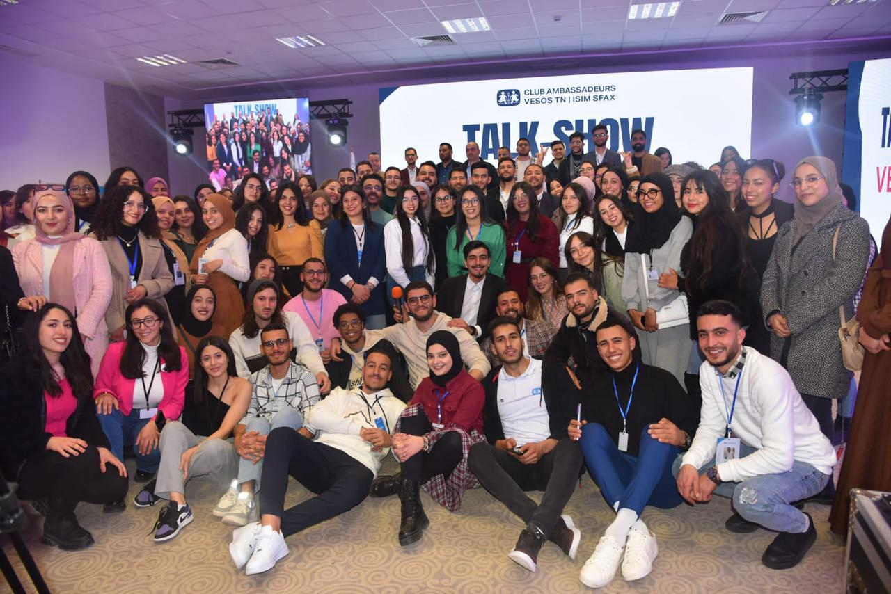

Club Ambassadeurs VESOS TN | ISIM Sfax
Présidente2022 - 2024
ISIM Sfax, Tunisie
En tant que Présidente du Club Ambassadeurs SOS Villages d'Enfants Tunisie, j'ai eu l'honneur de diriger et coordonner les activités de ce club dédié à la protection et au soutien des enfants. Organisation d'événements, Talk Shows, et manifestations caritatives pour sensibiliser à la cause des enfants en situation difficile.
SOS Villages d'Enfants Tunisie
Œuvrons ensemble pour qu'aucun enfant ne grandisse seul